sample 3.2
Voxel size 0.4471 µm (cubic) · volume 78 × 512 × 512 voxels (z, y, x) = 35 × 229 × 229 µm · exported 2026-10-14 from /Users/ft14968/Projects/osteo-track/lif-files/New_data_sept2026/Texas red 20min_24.8.2026.lif.
Downloads: osteocyte_props.csv · dendrites.csv · summary.log · summary.json · scene.glb · scene_obj.zip
3D scene
Drag to rotate, scroll to zoom, right-drag to pan. One colour per osteocyte; cleaned ch0 nuclei inside the hull (bone side) in translucent blue. Depth (z) points up. scene_obj.zip has the same scene as OBJ + MTL in µm, with and without the nuclei.
Pipeline counts
| stage | count |
|---|---|
| watershed regions | 87 |
| >= 100 voxels and > 0 vox inside xy hull (pass 1) | 45 |
| > -10 vox inside hull without soft tissue (pass 2) | 45 |
| removed: far side of soft tissue | 2 |
| removed: no nucleus | 16 |
| split by nuclei | 0 |
| removed: flat | 0 |
| surviving osteocytes | 27 |
| nuclei (cleaned ch0) | 91 |
| inside hull, bone side | 57 |
| detected | 26 |
| soft tissue | 22 |
| labelled, rejected | 4 |
| no ch1 label | 5 |
| inside hull, not labelled as osteocyte (rejected + no ch1) | 9 |
| protrusions reaching >= 2.0 µm | 131 |
| dendrites (rods, counted) | 129 |
| flat parts of the body (sheets, not counted) | 2 |
Osteocytes
| label | volume (µm³) | surface (µm²) | axis 1 (µm) | axis 2 (µm) | axis 3 (µm) | flatness | nuclei | nucleus (µm³) | dendrites | reach mean (µm) | reach sd (µm) | reach max (µm) | path mean (µm) |
|---|---|---|---|---|---|---|---|---|---|---|---|---|---|
| 9 | 291 | 546 | 34.48 | 5.96 | 4.52 | 0.76 | 1 | 46.83 | 4 | 5.77 | 5.49 | 13.92 | 10.44 |
| 13 | 459 | 961 | 28.78 | 20.74 | 5.32 | 0.26 | 1 | 44.78 | 7 | 4.86 | 3.31 | 11.74 | 13.79 |
| 15 | 727 | 1223 | 42.76 | 9.66 | 6.48 | 0.67 | 1 | 95.99 | 7 | 11.92 | 6.80 | 22.09 | 16.36 |
| 19 | 315 | 609 | 35.20 | 5.33 | 4.93 | 0.93 | 1 | 39.06 | 5 | 4.61 | 3.48 | 10.66 | 10.37 |
| 23 | 366 | 648 | 32.28 | 8.74 | 5.35 | 0.61 | 1 | 48.08 | 5 | 7.83 | 4.35 | 15.06 | 13.08 |
| 27 | 870 | 1241 | 35.46 | 10.50 | 8.41 | 0.80 | 1 | 42.01 | 6 | 11.18 | 9.48 | 25.56 | 15.88 |
| 29 | 832 | 1926 | 37.55 | 16.23 | 7.95 | 0.49 | 1 | 23.33 | 14 | 3.79 | 1.97 | 8.35 | 14.96 |
| 30 | 306 | 503 | 25.91 | 8.57 | 4.82 | 0.56 | 1 | 49.78 | 3 | 3.57 | 1.31 | 4.90 | 2.68 |
| 35 | 376 | 817 | 26.96 | 8.92 | 5.88 | 0.66 | 1 | 33.60 | 4 | 4.18 | 0.64 | 4.58 | 25.17 |
| 36 | 358 | 509 | 16.82 | 7.97 | 6.47 | 0.81 | 1 | 41.47 | 1 | 5.38 | 5.38 | 20.66 | |
| 47 | 436 | 882 | 46.32 | 9.80 | 8.60 | 0.88 | 1 | 34.41 | 6 | 6.32 | 1.73 | 8.02 | 15.14 |
| 49 | 276 | 490 | 29.48 | 10.03 | 5.50 | 0.55 | 1 | 42.18 | 3 | 7.59 | 2.90 | 9.60 | 10.50 |
| 54 | 281 | 405 | 21.80 | 6.15 | 4.69 | 0.76 | 1 | 39.95 | 2 | 6.37 | 3.17 | 8.61 | 5.53 |
| 57 | 598 | 1285 | 25.05 | 15.50 | 6.91 | 0.45 | 1 | 31.46 | 5 | 4.51 | 2.45 | 8.29 | 28.46 |
| 60 | 387 | 913 | 32.65 | 9.10 | 7.68 | 0.84 | 1 | 31.55 | 7 | 6.21 | 5.69 | 18.82 | 16.56 |
| 61 | 264 | 429 | 22.91 | 5.99 | 5.06 | 0.84 | 1 | 39.68 | 2 | 3.95 | 2.36 | 5.62 | 5.68 |
| 63 | 1365 | 3802 | 66.39 | 23.22 | 12.73 | 0.55 | 1 | 30.21 | 6 | 8.90 | 6.34 | 19.74 | 121 |
| 64 | 280 | 462 | 25.25 | 7.66 | 4.35 | 0.57 | 1 | 30.21 | 4 | 3.61 | 1.55 | 5.88 | 2.85 |
| 71 | 612 | 1298 | 69.82 | 8.78 | 6.41 | 0.73 | 1 | 26.28 | 9 | 12.04 | 12.75 | 34.14 | 17.48 |
| 76 | 231 | 328 | 19.95 | 6.99 | 3.60 | 0.52 | 1 | 36.02 | 1 | 2.24 | 2.24 | 0 | |
| 87 | 123 | 331 | 24.79 | 4.26 | 3.36 | 0.79 | 1 | 30.48 | 4 | 3.72 | 2.37 | 7.26 | 5.53 |
| 88 | 250 | 501 | 31.11 | 9.71 | 5.07 | 0.52 | 1 | 24.94 | 7 | 3.17 | 1.52 | 6.51 | 3.22 |
| 94 | 425 | 579 | 24.96 | 6.91 | 5.50 | 0.80 | 1 | 32.62 | 5 | 3.74 | 1.43 | 5.55 | 2.48 |
| 101 | 410 | 621 | 32.19 | 6.85 | 5.09 | 0.74 | 1 | 28.42 | 3 | 6.54 | 2.83 | 9.47 | 8.67 |
| 106 | 302 | 417 | 25.95 | 6.00 | 4.28 | 0.71 | 1 | 33.25 | 2 | 2.59 | 0.76 | 3.13 | 0.76 |
| 115 | 342 | 617 | 17.31 | 11.37 | 5.19 | 0.46 | 1 | 24.76 | 4 | 3.78 | 0.39 | 4.31 | 14.34 |
| 119 | 210 | 382 | 28.00 | 4.89 | 4.31 | 0.88 | 1 | 28.24 | 3 | 2.62 | 0.34 | 2.86 | 2.37 |
Gallery
Rotating maximum-intensity projections of ch1 inside each osteocyte. Click a cell for its 3D mesh and the check of its dendrite count: ch1 inside the cell (left) beside the detection (right) as a depth-shaded surface, rotating, with the cell body grey, counted dendrites blue, flat parts of the body green and short protrusions orange.
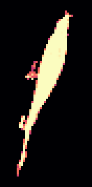
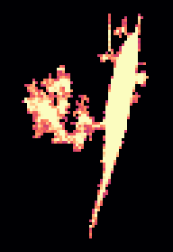
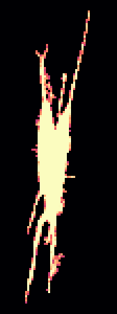
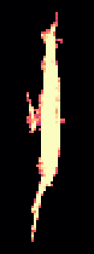
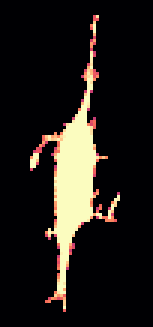
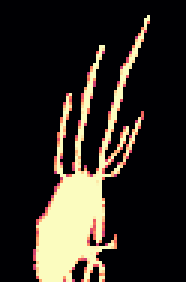
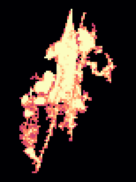
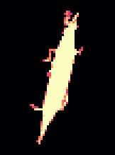
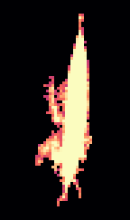
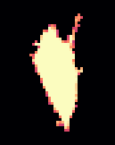
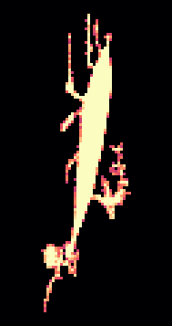
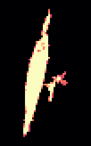
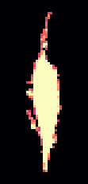
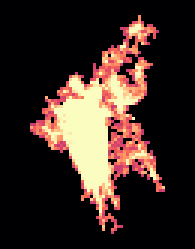
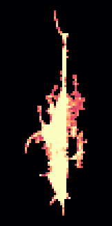
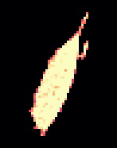
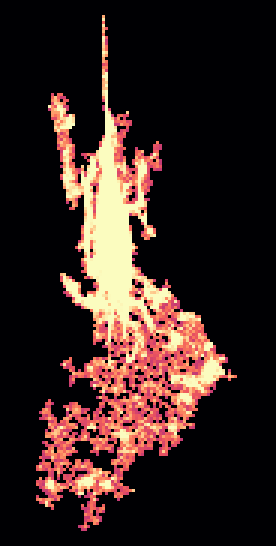
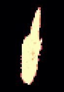
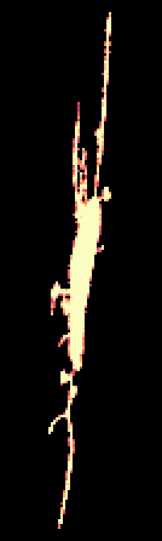
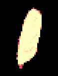
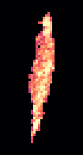
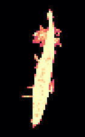
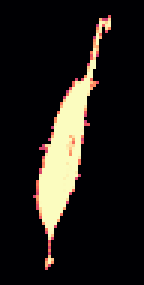
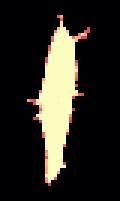
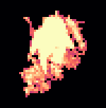
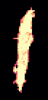